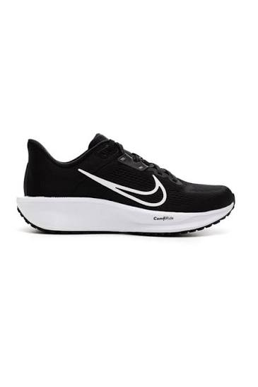
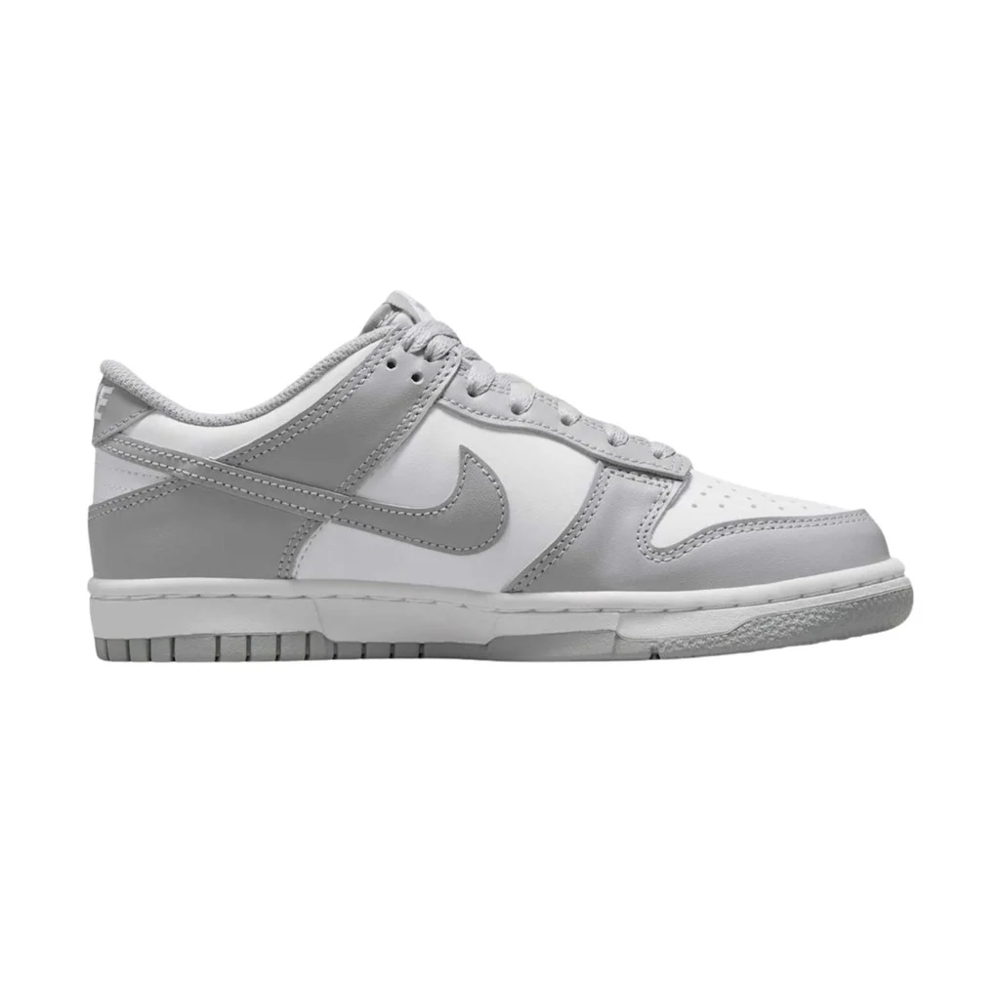
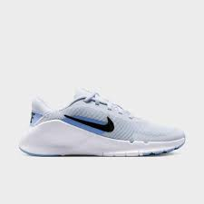

Inovação, movimento e estilo esportivo.
A Nike surgiu em 1964, inicialmente com o nome Blue Ribbon Sports. Em 1971, passou a utilizar o nome Nike.
A marca ficou conhecida mundialmente por seus produtos esportivos e por seu símbolo chamado Swoosh. Hoje, seus tênis são usados em esportes e também no dia a dia.

Modelos voltados para corridas e caminhadas. É importante escolher um calçado confortável e adequado à atividade.

Opções para passeios e uso diário, que combinam com diferentes roupas e estilos.

Modelos que podem ser escolhidos de acordo com o tipo de exercício e a necessidade de estabilidade.
Antes de comprar um tênis, pense na atividade que você pretende realizar. O tamanho correto e o conforto são importantes para uma boa experiência.
| Estilo | Indicação | O que observar |
|---|---|---|
| Corrida | Corridas e caminhadas | Amortecimento e conforto |
| Casual | Passeios e dia a dia | Versatilidade e estilo |
| Treino | Academia | Estabilidade e ajuste |